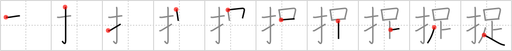

捉
← →
nab

Reading:
On-Yomi: ソク、サク — Kun-Yomi: とら.える
Heisig story:
Fingers . . . leg.
Koohii stories:
1) [mantixen] 15-2-2007(99): I felt a finger on my leg as someone tried to nab my wallet.
2) [Megaqwerty] 16-6-2007(8): Fingers nabs Davy Jone's wooden leg: Argh! Bring me back me leg, ya scurvy dog!
3) [bej001] 12-12-2012(5): We almost nabbed the pirate. I had my FINGER on his WOODEN LEG.
4) [kapalama] 5-9-2011(3): 捉える =捕らえる, 捕捉 , 捉まえる =掴まえる=捕まえる=摑まえる,nab (#2260 捉) ソク( 足 ), とらえる, つかまえる … Parts: 扌, 足 … Similars: つかまえる= 捕まえる catch (#1836 捕), 捉まえる nab (#2260 捉), 掴まえる clutch (#2249 掴), … Story: Donovan McNabb has fast Legs (runs well) and slippery Fingers (fumbles a lot).
5) [perrin4869] 22-9-2010(3): This kanji shows someone jumping to nab a pirate by his wooden leg with his fingers.